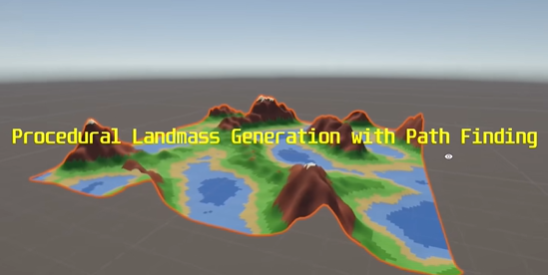
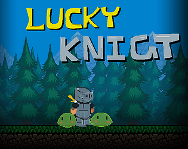

I have been playing games for a long time, and I started developing them when I enrolled in college.
For me, games are one of the best mediums for artistic expression as the immersion they offer is
unmatched. I am on a journey to achieve excellence in this craft, and I hope this page reflects
that.
That being said, I am currently pursuing an undergraduate program and am comfortable developing
games in the Unity engine, with additional experience in the Godot engine as well.
Some of my favorite games are:
- Kingdom Come: Deliverance
- Far Cry 3
- Fallout: New Vegas
- Valheim
A procedural landmass generator with a built-in shortest path finder between any two
points on the map.
The terrain is created using Perlin noise, and the pathfinding uses the A* algorithm to
move across the generated landscape.
It’s a simple project to explore how terrain generation and navigation can work
together.
_Source-Code

This game was made for a short game jam, the theme "Learning from past mistakes.". Hence
the game is spiritual successor of
_Lucky-Knight
.
Here we are trying to defeat the dragon using our trusty sword and defend ourself
with our sturdy shield!
In this game I experimented with animator and learnt more about it.

This game was made for "The Alter Contest 7" game jam.
In this platformer your objective is to collect the authentication key, unlock the exit
and leave. You can switch between 0 and 1 state to toggle platforms.
This game was developed by @sxh7 and me!
In a world years after the time of humans, only robots walk the earth. One day our
protagonist feels a sudden pang of pain and in order to get relief he needs to hunt down
"Memory Cores". However will he do something unexpected on his quest?
This game was made for the Boss Rush Gamejam 2024. This was first time making a game
of this scale and the first time making a boss fight
This game was developed by @sxh7, @neel and me!
Lucky Knight was made for the 2023 GMTK game jam, the theme was "Roles Reversed"
We took classic pokemon style turn based games to start with
In those games we, as the player, control what moves the Hero makes and then they have a
random hit chance, in Lucky Knight the Hero's moves are out of our hand, we get to
decide the hit chance of the move.
This was my very first game developed by @sxh7, @ankushkun and me!
